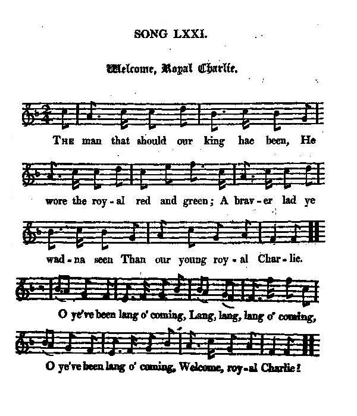
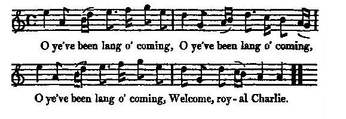

He's been long o' coming (Welcome, Royal Charlie)
Il en mit du temps pour venir (Bienvenue, royal Charlie)
Three Versions of the same Song - Trois versions d'un même chant
Tune - Mélodie"He's been long o' coming"
from Hogg's "Jacobite Relics" 2nd Series N°71, page 143, 1821
Sequenced by Lesley Nelson (cf. links)

|
To the tune:
"There are many editions of this song, which is popular all over the country, both south and north. This was commuuicated by Mr Fairley of Tweedsmuir. It is generally sung to the air given . [The only occurence of this tune in a collection, quoted by Andrew Kunz in his "Fiddler's Companion" is James Kerr's "Collection of Merry Melodies for the Violin", volume 4,N°22, page 5 (c.1880).] But the original one is better; I cannot find it, but remember the chorus runs thus:— "O ye've been lang o' coming, O ye've been lang o' coming, O ye've been lang o' coming, Welcome, royal Charlie!" Hogg in "Jacobite Relics 2nd series". Since Hogg publishes as "Welcome, Royal Charlie, Second Set" (JR2 N°72), the song addressed on page "Arouse, each kilted Clan" , I have combined the present chorus with the tune to this song in the following Midi file. |
A propos de la mélodie:
"Il existe de nombreuses publications de ce chant dans tout le pays, Ecosse et Angleterre. Celle-ci m'a été communiquée par M. Fairley de Tweedsmuir. On la chante habituellement sur l'air indiqué (ci-dessus). [Le seul recueil contenant cette mélodie, cité par Andrew Kunz dans son "Fiddler's Companion" est celui de James Kerr, "Collection of Merry Melodies for the Violin", volume 4,N°22, page 5 (c.1880).] Mais l'air original est plus beau. Je ne peux le trouver, mais le refrain se chante comme ceci: -. "Tu en mis du temps pour venir, Tu en mis du temps pour venir, Tu en mis du temps pour venir, Salut, royal Charlie!" Hogg in "Jacobite Relics 2nd series". Puisque Hogg publie sous le titre de "Welcome, Royal Charlie, 2ème version" (JR2, N°72), le chant visé à la page "Arouse, each kilted Clan" , j'ai combiné ledit chœur avec la mélodie qui accompagne ce chant, dans le fichier Midi qui va suivre: |

Variant with the alternative chorus
Sequenced by Christian Souchon
1° When France had her Assistance lent
Aidé de ses amis français
from a "Broadside" printed by J.Smyth, Belfast, between 1813 & 1850
| (Bodleian Library of Oxford University: Ballads Catalogue Harting B45(15) - cf. "Arouse, Ilk Kilted Clan" ), then included in several later collections, but not in Hogg's "Jacobite Relics", as sometimes erroneously stated. | Tirée d'une "broadside" conservée à la "Bibliothèque Bodléienne" de l'université d'Oxford: catalogue Harting des ballades B45(15) - cf. "Arouse, Ilk Kilted Clan" ), ce chant a été reproduit dans plusieurs recueils, mais non dans les "Reliques Jacobites" de Hogg, comme certains l'affirment à tort. |

|
WHEN FRANCE HAD HER ASSISTANCE LENT
1. When France had her assistance lent(1), A royal prince to Scotland sent, Towards the north his course he bent, His name was Royal Charlie, Our gallant Scottish prince was clad, Wi' bonnet blue and tartan plaid, An' oh, he was a handsome lad, Few could comparre wi' Charlie. An oh, but you've been lang o' comin, Lang, lang,lang o' comin' O but ye've been lang o' comin', Welcome Royal Charlie. 2. Around ilk valiant kilted clan, Let Highland hearts lead on the van, And charge the foe, claymore in hand, For sake o'Royal Charlie. O welcome, Charlie, o'er the main, Our Highland hills are a' your ain, Thrice welcome to our isle again, Our gallant Royal Charlie.
Oh, but you've been lang o' comin,
Oh, but you've been lang o' comin,
2.bis: verse found in "Jacobite Songs and Ballads" (Ed.McQuoid - Walter Scott) |
AIDE PAR SES AMIS FRANCAIS
1. Aidé par ses amis français(1), Un Prince royal est allé En Ecosse, dans sa patrie, Le Prince Royal Charlie. Ce courageux prince écossais Portait tartan et bleu bonnet. La fière allure qu'il avait, Non, nul n'égalait Charlie. Nous t'attendions depuis longtemps Longtemps, longtemps, longtemps, Nous t'attendions depuis longtemps, Salut, Royal Charlie! 2. Entourés de leurs vaillants clans Nos chefs montagnards vont devant, Dague en main, sus à l'ennemi Soutenir Royal Charlie. Toi qui as franchi l'océan, Notre Haute Terre t'attend! Soit trois fois bienvenu céans, Brave Royal Charlie! Nous t'attendions depuis longtemps Longtemps, longtemps, longtemps, Nous t'attendions depuis longtemps, Salut, Royal Charlie! 2 bis. A peine avait-il débarqué, Qu'affluent ses amis écossais, Accourus de tout le pays Saluer Royal Charlie. 3. Et aux quatre coins de l'Ecosse Des braves unissent leurs forces. Sous l'étendard sont réunis Tes milliers d'hommes, Charlie! Et comme l'orage qui tonne, Que le pibroch partout résonne, Qu'on ne puisse taire à personne Ton nom, O Royal Charlie! Nous t'attendions depuis longtemps Longtemps, longtemps, longtemps, Nous t'attendions depuis longtemps, Salut, Royal Charlie!
(Trad. Ch.Souchon (c) 2003)
|
2° When he came to the Isle of Mull
Continuation of the foregoing song
Quand il vint à l'Île de Mull
Suite du précédent
from the "Broadside" above, printed by J.Smyth, Belfast, b. 1813 & 1850
|
Other stanzas found on the "broadside" (
cf illustration
) published by J.Smyth/Belfast with the remark:
"The following is a continuation of the common street set of this song, by the pen of some anonymous Jacobite, who enters, with more zeal than accuracy, into transactions of a later period."
|
Autres couplets trouvés dans la "broadside" ci-dessus (
cf illustration
) avec la remarque:
"Ce qui suit est une adjonction au texte habituellement en usage pour cette chanson. On la doit à la plume de quelque Jacobite anonyme, plus soucieux de propagande que d'exactitude, qui y introduit des événements plus tardifs."
|
|
WHEN HE CAME TO THE ISLE OF MULL
1. When he came to the Isle o' Mull There he met the brave Lochiel, Joyfu' gladness then befell Between the Laird and Charlie. 2. We dare na' brew a peck o' maut, But Geordie says 'it is a faut, And to our brose can scarce get saut, For want o' Royal Charlie 3. Into the house where we do dwell, We dare na' keep a whisky stell But Geordie's spies they find the smell, Since e'er we left our Charlie. 4. Baith at Falkirk and Prestonpans Our brave and loyal Highland clans Cut up the Hanoverian bands And a' for their ain Charlie. 5. Since Charlie Stewart's now awa' A German Lairdie rules us a' And wears by force against our law The rights o' our ain Charlie. 6. If Charlie had but been sae wise, As ta'en Lord Lovat's good advice(*) He might ha'e worn the Crown sae nice And still been our ain Charlie. 7. When Charlie at Culloden field Was aided by the brave Lochiel, Twas treachery that forced to yield The clans of our own Charlie. 8. A bonny lass wi' tender smiles Conducted Charlie through the Isles, And saved him from the tyrant's wiles For the love she bore tae Charlie. 9. But Charlie he's gane o'er the sea In an auld French rotten tree; Guid day to Scotland's liberty And here's adieu to Charlie. (*) When he heard of the defeat at Culloden Lord Lovat said ‘none but a mad fool would have fought that day.’ |
QUAND IL VINT A L'ÎLE DE MULL
1. Quand il vint à l'Ile de Mull Il y a rencontré Lochiel, Et ce fut un plaisir mutuel Pour ce Laird et Charlie. 2. Nous n'osons brasser le houblon Geordie, sans ta permission; Notre brouet sans sel buvons, Quand donc reviendra Charlie? 3. Pas moyen d'avoir au logis, De quoi distiller le whisky L'espion de George l'eût senti, -Depuis que Charles est parti. 4. A Falkirk et à Prestonpans Nos courageux clans des Highlands Ont battu Hanovre et sa bande. S'ils l'ont fait, c'est pour Charlie. 5. Depuis que Charlie est parti Un Germain mène le pays Et s'il règne, c'est en dépit Des droits du Prince Charlie. 6. Pourquoi Charlie ne prit-il pas, L'avis éclairé de Lovat? (*) Il serait couronné déjà, Serait notre Roi Charlie. 7. Ta cause avait à Culloden Le soutien du brave Lochiel Mais la traitrise eut raison d'elle Et des amis de Charlie. 8. Une jeune fille tranquille Fut son guide parmi les îles, A déjouer les pièges habile Elle aimait notre Charlie. 9. Charlie put enfin embarquer Sur un méchant rafiot français; Ecosse, adieu ta liberté Adieu à notre Charlie. (*) Lorsqu'il apprit la nouvelle de la défaite à Culloden, Lord Lovat déclara: "Seul un imbécile pouvait livrer bataille ce jour-là". Traduction: Christian Souchon (c) 2004 |
3° The Youth that should have been our King
Né pour être un jour notre roi
from "Jacobite Relics" Volume II, N°71 (1821)
Variant from Charles Mackay's "Jacobite Songs Of Scotland" (1861)
|
From
Charles Mackay
's "Jacobite Songs and Ballads of Scotland, from 1688 to 1746". (London-Glasgow: Griffin, 1861). According to Mackay,
this version was rescued by
Peter Buchan
(1790 - 1854), north-east folksong collector and printer.
A slightly different version was communicated to James Hogg by Mr Fairley of Tuidsmuir. |
Tiré des "Jacobite Songs and Ballads of Scotland, from 1688 to 1746". (London-Glasgow: Griffin, 1861) de
Charles Mackay
. Selon Mackay,
cette version a été sauvée de l'oubli par
Peter Buchan
(1790 - 1854), collecteur de chants populaires du nord-est et imprimeur.
Une version légèrement différente fut communiquée à James Hogg par M. Fairley de Tuidsmuir. |
|
THE YOUTH THAT SHOULD HAVE BEEN OUR KING
(Mackay - 1861) 1. The youth that should have been our king, Was dress'd in yellow, red, and green, A braver lad ye wadna seen, Than our brave royal Charlie. Oh! he's been lang o' coming, Lang, lang, lang, o' coming, Oh! he's been lang o' coming, Welcome royal Charlie. 2. At Falkirk, and at Prestonpans, Supported by the Highland clans, They broke the Hanoverian bands, For our brave royal Charlie. Oh! he's been lang, etc. 3. The valiant chief, the brave Lochiel, He met Prince Charlie on the dale; Then, O! what kindness did prevail, Between the Chief and Charlie. Oh! he's been lang, etc. 4. O come and quaff along wi' me, And drink a bumper, three times three, To him that's come to set us free, Huzzy! rejoice for Charlie. Oh! he's been lang, etc. 5. We darena brew a peck o' maut, But Geordie says it is a faut; And to our kail cannot get saut, For want of royal Charlie. Oh! he's been lang, etc. 6. Now our good king abroad is gone, A German whelp now fills the throne, And whelps it is denied by none, Are brutes compared to Charlie. Oh! he's been lang, etc. 7. Now our good king is turn'd awa', A German whelp now rules us a'; And tho' we're forc'd against our law, The right belongs rto Charlie. Oh! he's been lang, etc. 8. If we had but our Charlie back, We wadna fear the German's crack; Wi' a' his thieving hungry pack, The right belongs to Charlie. Oh! he's been lang, etc. 9. O, Charlie come and lead the way, No German whelp shall bear the sway, Tho' ilka dog maun hae his day; The right belongs to Charlie. Oh! he's been lang, etc. from Charles Mackay 's "Jacobite Songs and Ballads" |
WELCOME ROYAL CHARLIE
(Version James Hogg 1821) 1. The man that should our king ha'e been He wore the royal red and green; A braver lad ye wadna seen Than our young royal Charlie. O ye've been lang o' coming, Lang, lang, lang o' coming, O ye've been lang o' coming, Welcome, royal Charlie! 3. But at Falkirk and Prestonpans, Supported by our Highland clans, He brak the Hanoverian bands, Our brave young royal Charlie. O ye've been lang o' coming, &c. 2. When Charlie in the Highland shiel Forgatherit wi' the great Lochiel, O sic kindness did prevail Atween the chief and Charlie! O ye've been lang o' coming, &c. 4. We daurna brew a peck o' maut, But Geordie he maun ca't a fau't, And to our kail we scarce get saut, For want o' royal Charlie. O ye've been lang o' coming, &c. 6. Since our true king abroad has gone, There's nought but Whelps sit on his throne; And Whelps, it is denied by none, Are beasts, compar'd wi' Charlie. O ye've been lang o' coming, &c. 5. Since our true king was turn'd awa, A doited German rules us a', And we are forc'd against the law, For the right belangs to Charlie. O ye've been lang o' coming, &c. 7. O an Charlie he were back, We wadna heed the German's crack, Wi' a' his thievish hungry pack, For the right belangs to Charlie. O ye've been lang o' coming, &c. 8. Then, Charlie, come and lead the way, And Whelps nae mair shall bear the sway: Though every dog maun hae its day, The right belangs to Charlie. O ye've been lang o' coming, Lang, lang, lang- o" coming, O ye've been lang o' coming, Welcome, royal Charlie! from James Hogg 's "Jacobite Relics", Volume II, N°71, page 143, 1821 |
NE POUR ETRE UN JOUR NOTRE ROI
(Traduction version Mackay) 1. Né pour être un jour notre Roi, Il apparut, vêtu de drap, Jaune et rouge et vert à la fois, Le bel et brave Charlie. Il en mit du temps pour venir! Mit du temps, du temps pour venir, Il en mit du temps pour venir! Salut royal Charlie. 2. A Falkirk et à Prestonpans, Pressés par les clans des Highlands, Les Hanovriens se débandent, Vaincus par notre Charlie. Il en mit du temps pour venir! 3. Le vaillant Chef, le fier Lochiel Eut une entrevue avec lui; Quels rapports pleins de courtoisie, Entre le Chef et Charlie. Il en mit du temps pour venir! 4. Venez et, ensemble, trinquons, Et buvons trois fois trois canons! Vive notre libération! Hourra, hourra pour Charlie! Il en mit du temps pour venir! 5. Nous n'osons brasser le houblon Geordie, sans ta permission; Et saler nos choux ne pouvons, Viens vite Royal Charlie. Il en mit du temps pour venir! 6. Notre bon Roi séjourne à Rome, Un Teuton siège sur le Trône, Les Guelfes sont, qui s'en étonne, Des brutes face à Charlie. Il en mit du temps pour venir! 7. Notre bon roi dut fuir au loin, Ici règne un Guelfe germain; Une insulte au droit et au bien. Le bon droit est pour Charlie. Il en mit du temps pour venir! 8. Si Charlie rentre à la maison, Foin du Germain, de ses prisons; De ses faméliques larrons, Le juge sera Charlie. Il en mit du temps pour venir! 9. Suivant Charlie, la Loi s'avance, Et chasse la germaine engeance, Si même à chacun vient sa chance;(*) Dans son droit est seul Charlie. Il en mit du temps pour venir!
Traduction: Christian Souchon (c) 2004
|
|
Charles was secretly despatched to Paris in January 1744
. A squadron under Admiral Roquefeuil sailed from the coast of France. Transports containing 7000 troops, to be led by Marshal Saxe, accompanied by the young prince, were in readiness to set sail for England. A severe storm effected, however, a complete disaster without any actual engagement taking place.
The loss in ships of the line, in transports, and in lives was a crushing blow to the hopes of Charles, who remained in France for over a year in a retirement which he keenly felt. He had at Rome already made the acquaintance of Lord Elcho and of John Murray of Broughton; at Paris he had seen many supporters of the Stuart cause; he was aware that in every European court the Jacobites were represented in earnest intrigue; and he had now taken a considerable share in correspondence and other actual work connected with the promotion of his own and his father's interests. (Source: Encyclopaedia Britannica 1911) |
C'est ainsi que Charles fut envoyé secrètement à Paris en janvier 1744.
Une escadrille commandée par l'amiral Roquefeuil quitta les côtes de la Manche. Et une flotte transportant 7000 soldats dont le Maréchal de Saxe devait prendre le commandement s'apprêtait à faire voile vers l'Angleterre. Mais une violente tempête dispersa les bateaux avant qu'aucun engagement n'ait pu avoir lieu.
Ces pertes en vaisseaux de ligne, en navires de transport et en vies détruisaient tous les espoirs de Charles qui, cependant, demeura en France pendant plus d'un an , à se morfondre dans l'isolement. Il avait fait à Rome la connaissance de Lord Elcho et de John Murray de Broughton. A Paris il rencontra plusieurs partisans des Stuarts. Il savait que les Jacobites étaient à l'œuvre dans toutes les cours d'Europe. Et il jouait un rôle important dans les échanges de correspondance et les actions concrètes engagées dans son propre intérêt et ceux de son père. Source: Encyclopédie Britannique 1911 |